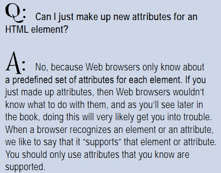

http://www.zhihu.com/question/19817672
歧视？我真对这些家伙感到蛋疼
ASCII用7位编码跟UNICODE 的16位有本质区别么？为毛你们总要搞那些“不必要的专有”，显得你professional么？
操
更新：评论一条条看下去表示我前面的话有点过激，大家自己去看看
另外一篇blog：
http://www.tbray.org/ongoing/When/200x/2003/04/26/UTF

如果是我自己写的浏览器，就没问题——我可以设计自己的HTML语言
但，通常情况下，你不需要。你能想到的大多新元素都是“不必要的专有”，正如你现在不必要为了一个应用设计一种编程语言一样；但另一方面，我们也知道C++、Java都是为了满足需求发展而创造出来的。
So, it's all up to you (and your capabilities)
google图片的第二页总是不显示缩略图，网上翻了翻似乎说是浏览器(我用的是Firefox3.6)的UA(UserAgent)字串问题
又去搜"firefox ua"，最后算是解决了
PS：列两个网址
http://www.useragentstring.com/pages/useragentstring.php
http://imgrey.com/sofe-game/firefox-ua-google-plus.html
更新：当我没说，最后还是装了Firefox8+FXChorme主题
忽然感到在一个壳里，闷得慌，，外面似乎有无垠的空间，我们却出不去
宇宙，宇宙
似乎完全说不出话来
evo你在哪？我们到天井里去
不知道怎么把图片发到隔离的一个地方，whatever
这个截屏是“正则表达式”
昨儿说话要把统计聊天记录时间的那个程序写出来，今儿折腾一上午，弄出来了，，不过很丑。。。也不知道准不准确 whatever，this is just a test
(犹豫要不要把代码bia上来。。) 算了，几张图吧
每天晚上睡觉前总是思维特别活跃，脑中一片翻腾的游来游去，几近补班那段胡思乱想的幸福状态里——我在想该是感激呢，，或者这其实与白天的大量吸收有关？
昨晚上想到这个：狼王你提的某些会让我模样上挺沮丧，比如狗蛋他们，比如少女，——之所以不说情绪上是因为这种沮丧感受更像是一种我可以握着它无以扩散的事物，，但我想提这么个词：“摧毁”。我不在意这些打击，乃至在想得到反驳的时候也会因为懒、或因为保守地放低自己，而就承认接受，，重点是这些打击不足以摧毁我。
然后我就很好奇，什么会摧毁我呢？韩寒某处说失去家乡是一件足以摧毁他的事情。恩，我们都是恋家的人，或者说根是土地里长出来我们也亲眼看着认识到了我们是大地的子民，，于是，失去家乡是一件可以摧毁我的事情。还有呢？你说过你的奶奶。我想失去亲人也是一件足以摧毁我的事情。
——但这些似乎又不是我所说的那种极致的“摧毁”，这些只会造成失落、消沉、软塌了铺在那但日子久了仍能长起来。失去家乡、失去亲人不足以使你自杀，，这些不是失去梦想——当然很多人没有梦想，那么换成“何以继续活着的理由”吧，一种自洽，一种哪怕你口上叫嚷着生活生命真TM没意义但仍不足以自杀的潜意识里活得下去的理由。
曾经极度自厌，虽然那种状态非常沮丧非常灰暗但仍不够格是一种足以自杀的状态。所以这些仍不是真正足以摧毁我的东西。对的，我说的摧毁不是破而后立的破，不是在废墟上重建前的废墟，我说的是真正消极、真正黑暗的一种破坏。范不是说失去梦想的时候放弃梦想么？那么我告诉你，在我所说的这种摧毁下，你能放弃的只有生命。
回过头来，昨晚上我是真心好奇这种摧毁会是怎么一件事或一种形态了。
说点别的吧
关于project，虽然我一直泼狼王的冷水，但从根上讲我其实是非常、非常感谢他的。他的一路热情让我整个学业的approach忽然有了生动的目标，，。。。呃，实在描述不太好，忽然从上面的状态里跳出来我快失语了。。。那么，还是感谢吧，感谢twiispa，感谢CCTV，感谢地球上火星上所有的物件，不管是生物还是非生物，来的还是没来的，还包括四大天王。。。。
PS：http://72liuxindi.diandian.com/ 这姑娘竟然也在，只是不知会多久
PS2：误会，上面这地址是纯爷们，，“72”我擦，你这赤裸裸的。。。
冒个泡吧
“看过的电影”、“看过的书”重新排了下序，本来想自己写程序的，结果手头写不出来（c已然忘了许多，c++又在半截上），，用vim琢磨了会儿成了，算是种喜悦吧——还有哪些文字编辑器能干这活？（要知道那些电影条目的格式还算比较混乱的）
狼王那网断，，sorry不该担心你会浮，后来想想你根本不会，，我这理论上有可能，只是于我的个性实际上比较不可能（甚至一有架空的预感就紧张不自在呢）
dd里写东西一时跟sina感觉不同，怪，，慢慢习惯，vim那么纠结的家伙我都快习惯了呢~~
刚声明完就架不住狼王强烈的呼吁决定搬了
我真2
狼王推荐过来的，，尚无措，改日认真研究
靠他妈的我必须再说一次，
左小祖咒的音乐NB极了！！
(因为：很久没听到过当年pixies那种爽、舒服了)
漂亮女孩可以青春剧里找，，但气质的女孩去哪找？
PS：为了标题不使不明真相者受精，说明，这是电影
PS2：douban给了3星，NM 8.6的分啊我操，，三傻大闹宝莱坞 那个9.多，douban你是肿么了
慢慢来吧，
因为狼王提到的那个project，看了些界面库之类的东西，，一团乱麻啊，表示凌乱、很凌乱
“真的救救我啊”
四星半 周迅
受狼王知乎上的感染，又找来香港红勘演唱会听了遍，，youku上窦唯、黑豹各种翻了翻
现在回到对我来说甚至很有意义的 雨吁
昨儿一节无法逃的课，无聊的我在手机上看《人月神话》，旁边的鸟在预习数据结构(你懂的)，，聊到一个链栈的题，就又跟他扯了些时间复杂度啊、哈希表啊什么的。发现他——乃至推而广之的“他们”，都是非常聪明的，核心问题立刻就能心领神会。但可惜他们每天大半的时间都用在游戏上了。
说回那个古老的话题，所谓天才。自己以前也还有天才(崇拜)情结呢，，后来意识到，天赋这种东西太容易被现实的种种不完美环境因素所掩埋，所以做成事的大多不因智力意义上的天才，而是因为能将有限的才能最大限度地发挥出来。
再进一步，大自然的进程中个体是微不足道的。牛顿不发现万有引力总有另一些人要发现，也许晚一些，也许更晚一些因为这些人没有足够的天才。我们关心的不是个体是否精英，只是群体中精英的分布性存在——甚至更极端，一个小概率事件只要重复上足够久，总会发生。时间能击败一切，而大自然有的是时间。
狼王让我说两句，那我就说两句。说得不好。
。。。。。。
昨QQ里的话“这几天净看c++了”；沉浸是种令人迷失的状态，像一头扎进羊水里不想出来。
话说为什么要表达呢？想想当初那为什么的原因，几乎想不出，，霸王别姬里某段话大意是：这些年轻学生，精力旺，又没钱找鸡，总得有个地方发泄一下。。。我们自然不愿意自以为珍视的东西竟是这种看上去下三滥的条件反应，不过那个耶鲁公开课里关于弗洛伊德的地方也讲到，毕加索画画是对性能量的宣泄什么的。
一团乱麻。。这些种东西我的应对方式是不去管它，，妈妈曾经告诫我们，(不要)“想太多”，“想太多”会耽误人“在正确的时间做该做的事”，，唔。。。我没说同不同意这说法，，我自己有时候不愿“想太多”的理由很简单：只要我能一头扎进别的感兴趣的东西里，干嘛自找没趣折腾这些剪不断理着乱？
说点儿别的吧，(狼王可以无视以下了其实)
c++比起c来方便许多，比如可以定义自己的操作符的意义(cout << MyType();)，但仍没有彻底的自由，比如不可以定义操作符本身(operator+、operator--，但不能operator@)，，这可能是基于一种practical的考虑。但是，没有任何逻辑上的限制阻止我们将这种自由扩大——设想扩大到极致，结果将是一种元语言(描述语言的语言)，恩。。。它可以描述一组组规则，其中每组规则都能实现一种特定的语言(c、c++、Java、Lisp)，，乃至，你不必将层次划分得这么明显。元语言可以直接应用到具体问题上，几条简单的规则勾画出一种局限在特定问题上的语言，就用这特定的语言解决特定的问题。
实践性的考虑自然复杂得多，，但且就幻想么，呵呵，其实我是在适应那个evo梦里关于编程语言的部分——其他几个部分还有：专属的操作系统、甚至专属的硬件架构
break
http://www.xiami.com/album/317206
狼王曾经建议的另一个后摇，叫什么来着...(失眠三十三天?)，尚文艺或叫愤青
并没比较的意思，只是个人觉得mono更fantasy一些，，更接近于——呃，纯粹
究竟该相信自己还是相信体制？
我知道那些“成熟者”又要说：都不能尽然相信，你要掌握其间的度。
好吧我问的就是这个“度”——而大千世界形形色色的人信仰着不同的“度”，，于是你要回答这个问题你就不能只告诉我何种度，还要告诉我何种度的原因。
我不相信这不同的度之间有对错之分，所以只能尽量听取（如果有的话）一些意见然后取舍自己更中意的
但，我是被弯折了么？
看了一章，尝试着翻了一部分，，发现比较费时间，先放这，以后怎么弄以后再说
============================华丽丽的分界线=================================
飞船山之战两年后
第0章
如何能得到世界上最富有的商人的注意？维恩戴西欧斯耗费了他所有有记忆的生命来侍奉皇室。他做梦也没想过自己会落魄到需要一个商人的地步，但现在他和他仅有的仆人正在东域工业区努力找着一条街的地址。
现在这条街甚至比刚才他们离开的那个还窄。世界上最富有的人当然不会到这里来！
巷道两边都有厚重的门。此时都关着，但这地方换班时一定是一片拥挤的混乱。每过几码都有布告，但这些跟他们在别处见过的广告不同。这些是要求和声明：工作前洗干净所有的爪子，没有预付薪水，前方雇用申请。最后这条指向巷道尽头处一对宽敞的门。傲慢、愚蠢。但依然……前去之时维恩戴西欧斯对着上面的城垛看了好久。当然是木制的镀上石膏。但如果真是石制，那么这就是藏在东域商区正中的一座城堡要塞。
维恩戴西欧斯停下，招手让他的仆人快走。Chitiratifor沿巷道一路走着高唱对主人的称赞。宽大的双门打开时他还没到跟前，一个极多组件的共生体出现了。它像一条警戒线那般散开，足足九个或十个。维恩戴西欧斯忍住了没去抬头看城垛上有无弓箭手的迹象。
这个巨型共生体傻不拉几地看了他们一会儿，然后用大而官样的调门问道：“应聘工作你要？识字吗？”
Chitiratifor停下介绍性夸耀的歌唱，回答道：“我们当然识字，但我们来不是要——”
看门人直接打断Chitiratifor的话：“无所谓。我有申请书这儿。”它的两个组件含着纸张跑下阶梯。“我会全部解释然后你签。Tycoon支付好。住宿好。每个十天一天假。”
Chitiratifor怒了。“看好了，哥们。我们不是来应聘的。我的老爷”——他尊敬地指了指维恩戴西欧斯——“来这里告诉Great Tycoon新产品和新机遇。”
“不会写手印也行——”看门人直到Chitiratifor的话语传到才打断自己。“不是找工作的？”它瞅了他们会儿，看到了Chitiratifor亮闪闪的配备。“是哦，你们打扮得不是这门道的。我应该注意到。”它想了想。“你们来错地儿了。谈生意的要去生意中心。你们返回去五个街区然后去Great Tycoon场。等等。我给你找个地图。”但这家伙并没动身，维恩戴西欧斯意识到这个共生体甚至比他想的还要大，一直伸展到视线不及的建筑后面；这些东部佬容忍极为不堪的变态。
Chitiratifor朝维恩戴西欧斯的方向退回来，最近的他抱怨道：“从这该死的建筑绕过去，那可是二里路！”
维恩戴西欧斯点点头，绕过他的仆从直接面对看门人。“我们一路从西岸过来帮助Tycoon。我们要求客气的接待，不是耽搁！”
看门人最近的组件怯生生地退后了。这么近，维恩戴西欧斯听得出这不是个军人共生体。除了晚餐派对，它很可能连一只活物都没宰过。事实上，这家伙如此天真甚至都没完全认识到它面对的致命愤怒。过了会儿它重新站好位置：“不管怎么说，阁下，我必须遵从命令。谈生意的用生意入口。”
Chitiratifor威胁要谋杀；维恩戴西欧斯挥手叫他安静。但维恩戴西欧斯确实不想绕道去正式入口——这不只是方不方便的问题。他现在意识到能找到这个入口完全是个幸运的意外。木女王的间谍不大可能离国土这么远，但能把他维恩戴西欧斯和Tycoon扯上联系的人越少越好。
他彬彬有礼地退后，撤出看门人的范围。如果他能和一个有点头脑的人谈谈，这个入口很好。“也许你的命令不适用于我。”
看门人考虑了几乎有五秒。“但我认为它们确实适用，”它最终说。
“呃，好吧，当我们等地图时，也许你该询问下某些更管事的人。”维恩戴西欧斯有好几个诱饵可以提供：“告诉你的上级他的访客带来了有关外太空来的的入侵的消息。”
“从哪儿来的什么消息？”
“我们有亲眼目击的关于人类的消息——”这话让对方更迷惘了。“该死的，伙计，关于螳螂怪物的消息！”
======================以下是原文==============================
Two years after the
Battle on Starship Hill
Chapter 00
How do you get the attention of the richest businessperson in the world? Vendacious had spent all his well-remembered life sucking up to royalty. He had never dreamed he would fall so low as to need a common merchant, but here he was with his only remaining servant, trying to find a street address in East Home’s factory district.
This latest street was even narrower than the one they had left. Surely the world’s richest would never come here!
The alley had heavy doors set on either side. At the moment, all were closed, but the place must be a crowded madness at shift change. There were posters every few feet, but these were not the advertisements they had seen elsewhere. These were demands and announcements: WASH ALL PAWS BEFORE WORK, NO ADVANCE WAGES, EMPLOYMENT APPLICATIONS AHEAD. This last sign pointed toward a wide pair of doors at the end of the alley. It was all marvelously pompous and silly. And yet … as he walked along, Vendacious took a long look at the crenellations above him. Surely that was plaster over wood. But if it was real stone, then this was a fortified castle hidden right in the middle of East Home commercialism.
Vendacious held back, waved at his servant to proceed. Chitiratifor advanced along the alley, singing praise for his dear master. He had not quite reached the wide doors when they swung open and a hugely numerous pack emerged. It was nine or ten and it spread across their way like a sentry line. Vendacious suppressed the urge to look up at the battlements for signs of archers.
The huge pack looked at them stupidly for a moment, then spoke in loud and officious chords. “Employment work you want? Can you read?”
Chitiratifor stopped singing introductory flourishes, and replied, “Of course we can read, but we’re not here for—”
The gatekeeper pack spoke right over Chitiratifor’s words: “No matter. I have application forms here.” Two of it trotted down the steps with scraps of paper held in their jaws. “I will explain it all to you and then you sign. Tycoon pay good. Give good housing. And one day off every tenday.”
Chitiratifor bristled. “See here, my good pack. We are not seeking employment. My lord”—he gestured respectfully at Vendacious—“has come to tell the Great Tycoon of new products and opportunities.”
“Paw prints to suffice if you cannot write—” The other interrupted its own speech as Chitiratifor’s words finally penetrated. “Not wanting to apply for work?” It looked at them for moment, took in Chitiratifor’s flashy outfit. “Yes, you are not dressed for this doorway. I should have noticed.” It thought for a second. “You are in wrong place. Business visitors must visit to the Business Center. You go back five blocks and then onto the Concourse of the Great Tycoon. Wait. I get you a map.” The creature didn’t move, but Vendacious realized the pack was even more numerous than he had thought, extending back out of sight into the building; these Easterners tolerated the most grotesque perversions.
Chitiratifor shuffled back in Vendacious’ direction, and the nearest of him hissed, “That’s a two-mile walk just to get to the other side of this frigging building!”
Vendacious nodded and walked around his servant, confronting the gatekeeper directly. “We’ve come all the way from the West Coast to help Tycoon. We demand a courteous response, not petty delays!”
The nearest members of the gatekeeper stepped back timidly. Up close, Vendacious could hear that this was no military pack. Except at dinner parties, it probably never had killed a single living thing. In fact, the creature was so naive that it didn’t really recognize the deadly anger confronting it. After a moment, it reformed its line, and said “Nevertheless, sir, I must follow my orders. Business visitors use the business entrance.”
Chitiratifor was hissing murder; Vendacious waved him quiet. But Vendacious really didn’t want to walk around to the official entrance—and that wasn’t just a matter of convenience. He now realized that finding this entrance was a lucky accident. Woodcarver’s spies were unlikely this far from home, but the fewer people who could draw a connection between Tycoon and Vendacious, the better.
He backed off courteously, out of the gatekeeper’s space. This entrance would be fine if he could just talk to someone with a mind. “Perhaps your orders do not apply to me.”
The gatekeeper pondered the possibility for almost five seconds. “But I think they do apply,” it finally said.
“Well then, while we wait for the map, perhaps you could pass on an enquiry to someone who deals with difficult problems.” There were several lures Vendacious could dangle: “Tell your supervisor that his visitors bear news about the invasion from outer space.”
“The what from where?”
“We have eyewitness information about the humans—” that provoked more blank looks. “Damn it, fellow, this is about the mantis monsters!”
第几度black swan了？
好片没话说
不知何故就一时脑子转不动了，，
然后似乎不知何故就生气，
然后，现在在抽一支烟
我的女朋友走丢了，我去找她。
在一个三岔路口前，有两条路是上山的(路1，路2)，一条路是下山的(路3)。
她有60%的概率会上山，40%的概率会下山，，如果她上山，50%的概率会走路1，50%的概率会走路2。
现在：我应该走哪条路去找她？
路1的概率 = 60% × 50% = 30%
路2的概率 = 60% × 50% = 30%
路3的概率 = 40% × 100% = 40%
所以，尽管她上山的概率大于下山的概率，我还是决定去下山的那条路上找她。
“在哥白尼时代之前，人们关于宇宙的一切都懂得。在学校里他们就会拍拍胸膛告诉你，现在的一切怎样，过去又怎样，将来会怎样。地是平的，苍穹覆盖大地，如同大教堂的圆顶，明亮而寒冷的星星贴在上面；太阳和行星则在其间运行。而在比较有学问的人中则说，地是宇宙中心的一个球，天是一个同心球，其间的构造则和上述一样。总之，如果说天外还有什么，那就是一无所有的空间，不必再去探讨。所有这一切的历史可以追溯到它的起始；在这以前就是毫无变化的永恒，它已经完全地描述过了，讨论过了。但不论是哪种说法，宇宙都是一个已知的东西。哥白尼体系以及随之而来的天文学发现的巨大效果就在于，关于永恒和无垠的一点点知识，却被称为关于宇宙的知识；现在知识已经多得多了；但我们却称它为关于此地和此时的知识。关于太阳系我们可以说上许多，但是它毕竟只是我们的家而不是我们的城市。关于我们的太阳所属的星系我们也可以说上一些；但是它也只是我们的星系而不是宇宙。我们谈论此地，意下还有一个彼地，有一天我们会对彼地有一些了解，但现在则完全不了解。”
——《现代世界中的数学》
天。。。发现有时候向人讲明白一个东西实在是太困难了——这困难并不全然意味着自己理解得还不够透彻，有时纯粹就是表达本身的局限性
(不过自行推导出这个结果还是非常satisfying的)
占地方
http://blog.sina.com.cn/s/blog_3dc328870100yz9n.html
许久之后偶尔再听一次还是很爽的
占地方
http://blog.sina.com.cn/s/blog_3dc328870100yydh.html
一直以来觉得东西存在自个电脑里不太安全，万一哪天硬盘坏了呢；blog存在新浪上也不是那么安全，万一哪天新浪倒闭了呢。(这些其实涉及对什么看重的问题，比如有的人就不在乎存不存聊天记录——话说回去，就像学习一样，攒一大堆资料总没有消化成自己的记忆来得靠谱)
于是就想着把这些private data分布式地、带冗余地存到网上去(等价说法：别把所有鸡蛋放在一个篮子里)
不过技术性的困难来了——我没有那么大的免费网盘，新浪或是别的运营商也没那么general的备份功能，，最关键的一点：我不想depend on他们，换句话说，想要资源，又不想要资源提供者强加的限制
here is 想法一：
任何文件本质都是0、1的二进制码，它们实际上是什么是看你怎么解释的，，干脆就解释成ASCII码(虽然是乱码)。然后呢，把这个“文本文件”发到比方说新浪blog上去，一篇blog装不下用两篇，，一个blog装不下申请两个。用的时候呢，把这“文本文件”们下载、组织一下，，好了，你的setup.rar、jgood.rm回来了
(觉得这算是个比较靠谱的想法，只是暂时没能力实现。唔。。涉及到网络、网页之类的知识，以及近似于外挂的自动发博文之类的程序)
想法二：
上述想法generalization之后就是对互联网“存储资源”的窃取，，很自然地，我们想进一步能不能窃取“计算资源”呢？
初看似乎没有什么免费的机时给你用，不过昨儿想到了OJ。(恩，Online Judge，一种编程练习的平台，上面有各种题目，你对一个题目写一段代码，提交给OJ，它会判定你的解法对不对)
这是一种计算资源，不过限制忒大了点——你的代码有运行时间限制、有内存占用限制。不过呢，一个能用，n个能用，，互联网最不担心的就是量。
还有点障碍，OJ这家伙只会说你的答案对了还是错了，一般不给出你的代码究竟产生什么样的错误输出——注意，是一般，，有的题目会说，正确答案是：3,5,8,13,21...你给的是：3,5,9,17,31...
似乎有点投机取巧的机会了：我们通过建立一种映射系统，将我们想要的程序输出映射到OJ能给的输出(说不太明白，类比希尔伯特(?)的数学公理化)。总之就是编码，完了再对OJ的输出解码。
整个过程结束下来就是我们窃取了“计算资源”。(昨儿没想到，刚发现输入是个问题。。)(刚又想到，OJ反正是提交代码的，每次运算任务可以将输入硬编码到代码里头)
(比起想法一来这个比较不靠谱，虽然有些OJ可以自己创建题目，不过那个编码实在是个玄乎的数学问题，，进一步说，最终还涉及到分布式计算——比较遥远了这个)
总结：
有了存储资源和计算资源，我们就有了整个的“冯诺依曼”计算机——而且是近乎无限能力的这么一台计算机(呃，理想情况下)。对于这么种奢侈，你想在它上面跑些什么呢？——aha! keep it secret...shh...
MIT的算法公开课中一句话现在忽然印象很深刻：“give me some math!”
我想我是该去捣鼓些数学了，，那真会是一个纯粹、静谧、有趣的世界
几天来一直在看算法(CLRS)，，很难，不过也挺有感觉——我是说对编程的理解一直在更上一个层次
这周完了要再变更下安排——课程啊课程，真是个纠结的东西
“说说”？如果没更多要说的就说说罢吧，，起码是个表现自己活着的东西~~
http://www.xiami.com/album/30059
这个不错，，那时之后已经不适合听纯激烈的摇滚了，像这种轻点的和关注其他方面的不很矫情的音乐就正好